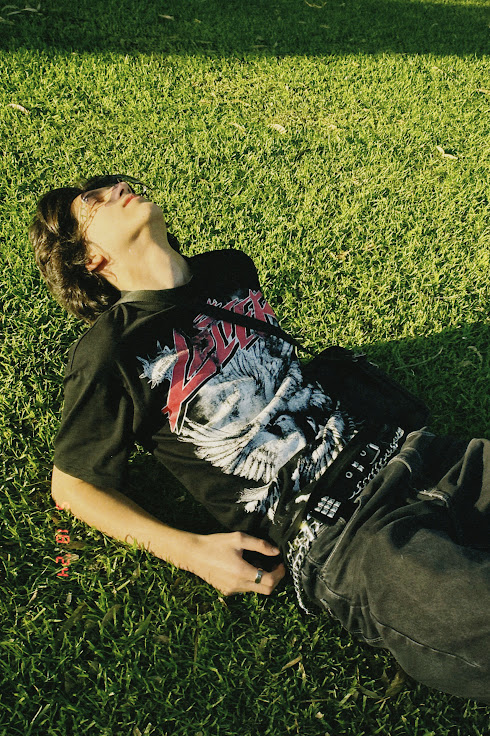
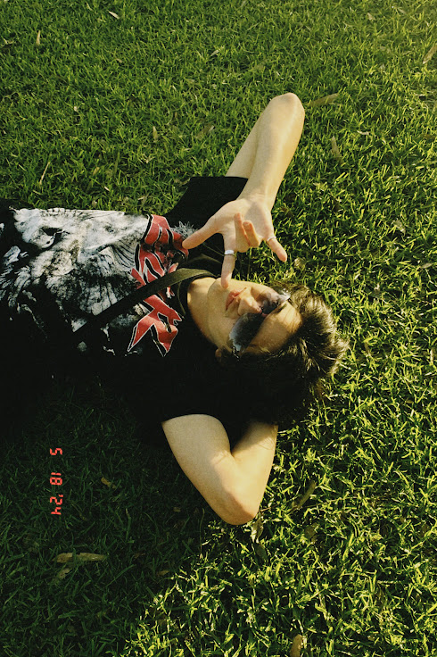
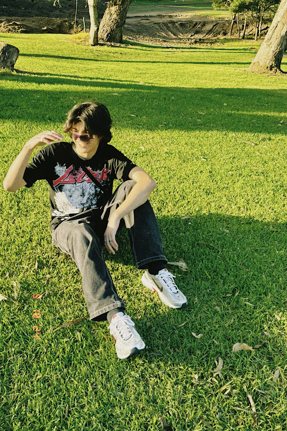
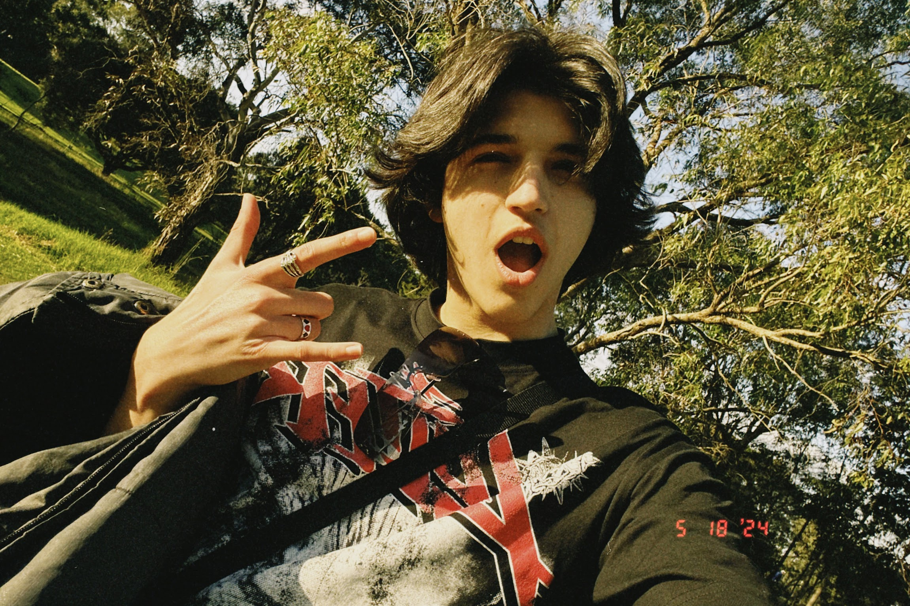
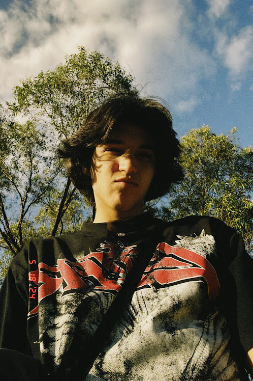
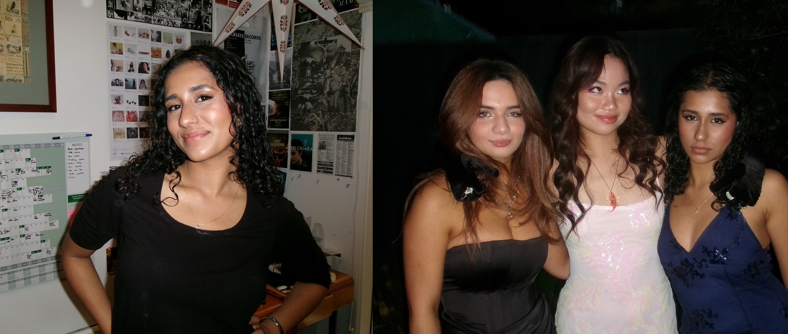

Every image taken comes from an angle. So, you cannot take a photo without having to consider angles to some degree. Taking photos from the standard front-facing angle gives good results. But, let's try to spice things up and get creative with our angles. Making that small decision can wield big results.
So how do you know which angles are best?
How do you take photos from those angles?
Well, that's what this page is all for!
First, there are an endless amount of angles for you to choose from. But we can simplify that into basic angles that are good places to start from.
1. Bird's Eye View
Here's an example:

As you can see, it consists of a direct shot that's looking down at your subject matter. This shot can be good for landscapes or photos that tell a narrative/scene. This can be hard to achieve though, especially if you want it high up. You might need more than a camera to reach that level (like a drone?).
2. High Angle
Examples:
  This is a lowered version of a bird's eye view angle. More so, it's when the camera is closer to the subject matter, and the angle is at a higher point. Like when it's closer to their head. Choosing this angle makes the model look smaller. It also creates a unique sense of proportion.
3. Low Angle
Example for your perusal:
 This shot is when you take the photo below the subject's eye level. This can communicate confidence and power, since it makes the subject appear larger. Since they are looking down at the viewer, it sort of creates a power dynamic.
4. Front-facing
Example:
This angle is great for your typical portrait! To put it in more simple terms, it can create a connection between the model and viewer. It can also be very intimate and close if that's what you desire for your photo. To achieve this shot, it is best to take it from the subject's eye level.